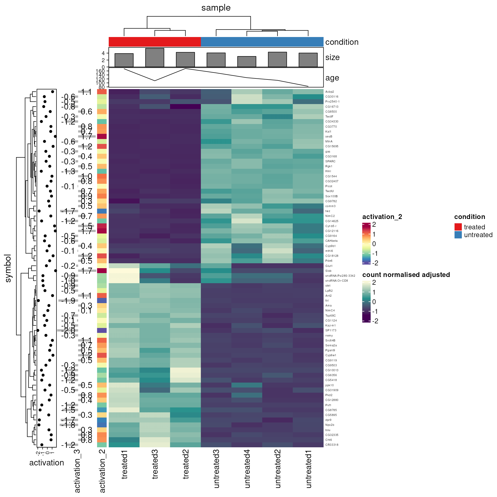

Stefano Mangiola 2025-01-26
tidyHeatmap is a package that introduces tidy principles to the creation of information-rich heatmaps. This package uses ComplexHeatmap as graphical engine.
Citation
Mangiola et al., (2020). tidyHeatmap: an R package for modular heatmap production based on tidy principles. Journal of Open Source Software, 5(52), 2472, https://doi.org/10.21105/joss.02472
Please have a look also to
- tidygate for adding custom gate information to your tibble
- tidySingleCellExperiment for tidy manipulation of Seurat objects
- tidyseurat for tidy manipulation of Seurat objects
- tidybulk for tidy high-level data analysis and manipulation
- tidySummarizedExperiment for heatmaps produced with tidy principles
Full documentation here
# Create some more data points
pasilla_plus <-
tidyHeatmap::pasilla |>
dplyr::mutate(activation_2 = activation, activation_3 = activation) |>
tidyr::nest(data = -sample) |>
dplyr::mutate(size = rnorm(n(), 4,0.5)) |>
dplyr::mutate(age = runif(n(), 50, 200)) |>
tidyr::unnest(data)
# Plot
pasilla_plus |>
heatmap(
.column = sample,
.row = symbol,
.value = `count normalised adjusted`,
scale = "row"
) |>
annotation_group(location) |>
annotation_tile(condition, show_legend = FALSE) |>
annotation_point(activation) |>
annotation_numeric(activation_3) |>
annotation_tile(activation_2) |>
annotation_bar(size) |>
annotation_line(age)
Advantages:
- Modular annotation with just specifying column names
- Custom grouping of rows/columns is easy to specify with
annotation_group, e.g.heatmap(...) |> annotation_group(...) - Labels size adjusted by row and column total number
- Default use of Brewer and Viridis palettes
Retrieve heatmap data and dendrograms
After creating a heatmap, you can extract the matrix and dendrograms exactly as they appear in the plot:
# Create heatmap
hm <- tidyHeatmap::N52 |>
tidyHeatmap::heatmap(
.row = symbol_ct,
.column = UBR,
.value = `read count normalised log`
)
# Extract heatmap data as plotted
result <- hm |> get_heatmap_data()
ordered_matrix <- result$matrix # Matrix with rows/columns in heatmap order
row_dendrogram <- result$row_dend # Row dendrogram object
column_dendrogram <- result$column_dend # Column dendrogram object
# All have consistent row and column names
print(rownames(ordered_matrix))
print(labels(row_dendrogram))Functions/utilities available
| Function | Description |
|---|---|
heatmap |
Plots base heatmap |
annotation_group |
Adds group annotation strips and grouping to the heatmap |
annotation_tile |
Adds tile annotation to the heatmap |
annotation_point |
Adds point annotation to the heatmap |
annotation_bar |
Adds bar annotation to the heatmap |
annotation_numeric |
Adds bar + number annotation to the heatmap |
annotation_line |
Adds line annotation to the heatmap |
layer_text |
Add layer of text on top of the heatmap |
layer_point |
Adds layer of symbols on top of the heatmap |
layer_square |
Adds layer of symbols on top of the heatmap |
layer_diamond |
Adds layer of symbols on top of the heatmap |
layer_arrow_up |
Adds layer of symbols on top of the heatmap |
layer_arrow_down |
Add layer of symbols on top of the heatmap |
layer_star |
Add layer of symbols on top of the heatmap |
layer_asterisk |
Add layer of symbols on top of the heatmap |
split_rows |
Splits the rows based on the dendogram |
split_columns |
Splits the columns based on the dendogram |
get_heatmap_data |
Retrieves matrix and dendrograms exactly as plotted |
save_pdf |
Saves the PDF of the heatmap |
+ |
Integrate heatmaps side-by-side |
as_ComplexHeatmap |
Convert the tidyHeatmap output to ComplexHeatmap for non-standard “drawing” |
wrap_heatmap |
Allows the integration with the patchwork package |
Installation
To install the most up-to-date version
devtools::install_github("stemangiola/tidyHeatmap")To install the most stable version (however please keep in mind that this package is under a maturing lifecycle stage)
install.packages("tidyHeatmap")Contribution
If you want to contribute to the software, report issues or problems with the software or seek support please open an issue here